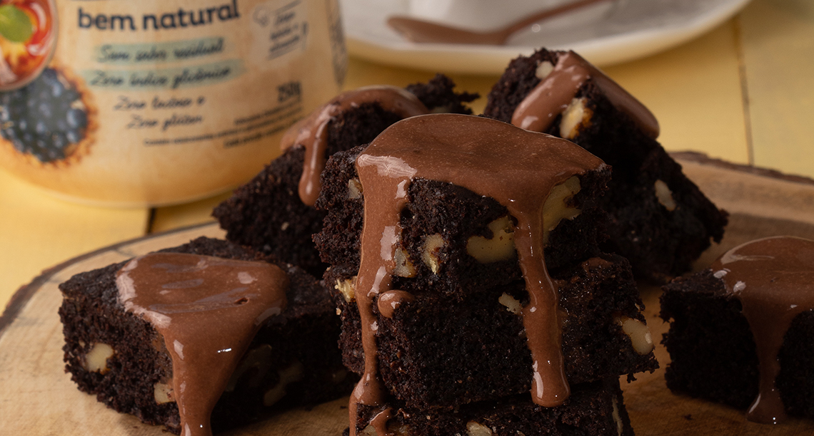

Minhas Receitas

Brownie de chocolate com calda
INGREDIENTES
Para a massa
85g de chocolate meio amargo
1/2 colheres (sopa) de manteiga
(50g) 2 colheres (sopa) de cacau em pó
Peneirado 10 colheres dosadoras de Zero-Cal Eritritol Bem Natural
2 ovos
1 colher (chá) de essência de baunilha
1/2 xícara (chá) de farinha de trigo integral
1 colher (chá) de bicarbonato de sódio
1 xícara (chá) de nozes
picadas 2 colheres (sopa) de óleo vegetal
1 fio de azeite
Para a calda
3 colheres (sopa) de cacau em pó
20 gotas de Zero-Cal Eritritol Bem Natural Líquido
1/2 caixa de creme de leite light (100 ml)
2 colheres (sopa) de leite desnatado
Modo de Preparo
Coloque o chocolate e a manteiga em uma panela e leve ao banho maria até derreter.
Tire do banho maria com cuidado e seque a panela.
Acrescente o cacau e o Zero-Cal Eritritol Bem Natural Pote e misture bem com ajuda de um batedor de arame até dissolver.
Acrescente os ovos, a essência de baunilha e misture até ficar homogêneo.
Adicione a farinha, o bicarbonato, as nozes, o óleo e mexa bem.
Pré-aquecida o forno a 180°C, despeje a massa em uma forma quadrada (22 cm x 22 cm) untada com azeite e farinha
Asse por aproximadamente 20 minutos.
Para a Calda
em uma tigela, coloque o Cacau, o Zero-Cal Eritritol Bem Natural líquido, o creme de leite light, o leite desnatado e misture bem até ficar homogêneo.
Finalização
Despeje a cobertura em cima da massa.
Espere esfriar e corte no formato que preferir.
Sirva em seguida.